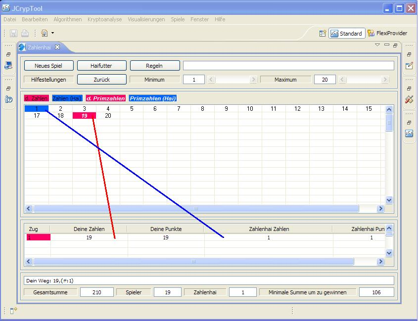
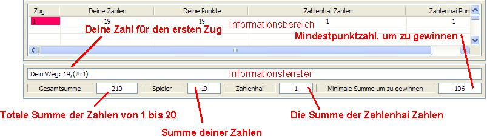

Wer mehr über Teiler von Zahlen und Primzahlen lernen will, der sollte das Zahlenhai Spiel spielen. Die vorliegende Anleitung basiert auf einem Zahlenfeld von 1 bis 20 (per Parameter kann das Zahlenfeld geändert werden). Das Spiel scheint für ein kleines Zahlenfeld einfach zu sein, es ist allerdings eine große Herausforderung für ein großes Zahlenfeld.
Die Spielidee besteht darin soviele Zahlen wie möglich aus einem gegebenen Zahlenfeld zu gewinnen. Die Summe der gewonnenen Zahlen sollte größer sein als die Summe der Zahlen des Zahlenhais und möglichst nahe an der maximal erreichbaren Summe für das gegebene Zahlenfeld liegen. Man spricht in dem Zusammenhang anstatt von der maximalen Summe auch von dem optimalen Ergebnis des Zahlenfeldes. Hat man eine beliebige Zahl ausgewählt, so frisst der Zahlenhai alle echten Teiler dieser Zahl (z.B. alle echten Teiler von 6 sind 1, 2 und 3). Das Spiel endet, wenn alle Zahlen ausgewählt oder vom Zahlenhai gefressen wurden.
Das Spiel startet mit dem folgenden Fenster. Das Zahlenfeld ist schon automatisch von 1 bis 20 gesetzt. Der Zahlenhai frisst ja alle echten, freien Teiler deiner ausgewählten Zahl. Hat die Zahl keine echten, freien Teiler mehr, frisst er deine ausgewählte Zahl selbst. Versuche die Anzahl der gefressenen Zahlen auf ein Minimum von 1 oder 2 zu beschränken. Um ein optimales Ergebnis zu erzielen, mußt du als erste Zahl immer die größte verfügbare Primzahl auswählen, also für das Zahlenfeld 1 bis 20 ist das die 19. Diese hat nur die 1 als echten und freien Teiler. Du kannst nun die Zahl 19 im Zahlenfeld Auswahlbereich anklicken.

Nachdem du die 19 angewählst hast, frisst der Zahlenhai die 1. Außerdem werden die Zahlen farbig. Beide Zahlen sind nun raus aus dem Spiel und nicht mehr aktiv oder frei. Das folgende Bild zeigt die Situation, nachdem die 19 angeklickt wurde.
Im Informationsbereich werden deine Züge dokumentiert. Neben der Zugnummer, deiner ausgewählten Nummer, deinem aktuellen Punktestand werden auch die Zahlen des Zahlenhais als auch sein aktueller Punktestand angezeigt. Weiter unten findest du auf einen Blick die Abfolge deiner bisher ausgewählten Zahlen. Der Inhalt dieses Fensters kann für eine weitere Verarbeitung kopiert werden. Zusätzlich gibt es noch die Information über die totale Summe für das gegebene Zahlenfeld. Es wird auch die Summe angezeigt, die man mindestens erreichen muß, um zu gewinnen. Schließlich wird auch dein aktueller Punktestand als auch der des Zahlenhais angezeigt.
Während des Spiels kann es passieren, dass Zahlen übrig bleiben, die keine freien Teiler mehr haben, aber selbst auch nicht freie Teiler für andere Zahlen sind. Diese Zahlen können nicht mehr zu deinem Punktekonto beitragen. Im Falle einer solchen Situation, wird der Knopf "Haifutter" aktiviert. Das folgende Bild zeigt den Hilfetext des Knopfes "Haifutter". Alle Zahlen, die nicht mehr beitragen können, sind aufgelistet. Durch Drücken des Knopfes "Haifutter" kannst du diese Zahlen sofort aus dem Spiel nehmen (Futter für den Hai). Es wird empfohlen dieses auch zu tun. Man bekommt einfach einen besseren Überblick über die wirklich interessanten Zahlen. Aber aufgepasst, diese Aktion kann nicht rückgängig gemacht werden.

Das folgende Bild zeigt nun den Stand, nachdem der Knopf "Haifutter" gedrückt wurde. Alle aus dem Spiel genommenen Zahlen sind nun farbig und nicht mehr frei.

Nach dem ersten Zug sind die weiteren Züge etwas schwieriger. Du solltest versuchen dem Zahlenhai so wenig Zahlen wie möglich übrig zu lassen. Am Besten nur einen Teiler, manchmal auch zwei Teiler. Aber wähle nicht zu kleine Zahlen aus die nur einen Teiler haben, da diese unter Umständen als Teiler für größere Zahlen benötigt werden. Für den zweiten Zug ist es empfehlenswert entweder 15=3*5, 14=2*7 oder 10=2*5 zu wählen. Das folgende Bild zeigt nun den Stand des Spiels, nach dem 15 ausgewählt wurde.

Um dich zu unterstützen gibt es einige Einstellungsmöglichkeiten. Diese Einstellungsmöglichkeiten findest du im "Einstellungsfenster". Hier mußt du nun noch unter Spiele den Zahlenhai auswählen. Oben findest eine Auswahl von Möglichkeiten, um das Zahlenfeld zu generieren. Standardmäßig ist hier der oberste Punkt ausgewählt. Diese Einstellung erlaubt dir ein Zahlenfeld im Bereich 1 bis zu einer maximalen Zahl auszuwählen. Mehr Details findest du weiter unten (vergleiche auch hier: Beschreibung).

Standardmäßig ist auch der letzte Punkt für die Spielvariante ausgewählt. Wenn du mit der Maus über das Feld mit der Zahl 10 fährst, wird das Spielfeld grau und eine Hilfestellung wird dir angezeigt. Die Hilfestellung zeigt dir die noch verfügbaren, freien Teiler der Zahl 10. Es ist für die 10 nur noch der freie Teiler 2 verfügbar. Wir werden nun die 10 als nächste Zahl auswählen.

Du kannst noch mehr Hinweise bekommen, wenn du mit der Maus auf den Knopf
"Hilfestellungen" klickst. Das folgende Bild zeigt nun die Spielsituation, nachdem
die 10 ausgewählt wurde. Es wird empfohlen als nächstes die 20 anzuklicken.
Weiterhin wird angezeigt, dass man immer noch gewinnen kann. Beachte, dass der
Vorschlag dir nicht hilft, immer ein optimales Ergebnis zu finden. Er hilft
dir aber, immer gegen den Zahlenhai zu gewinnen. Weiterhin kannst du immer
überprüfen, ob du noch gewinnen kannst, sofern du deine eigenen Züge durchführst.
Hier folgen wir nun der Empfehlung und drücken die 20.
Achtung: Für große Zahlenfelder kann die Abfrage der Hilfestellung einige Zeit in Anspruch nehmen.

Für die nächsten Züge kannst du z.B. die freien Zahlen in der Reihenfolge 16, 12 und 14 auswählen. Alle Zahlen haben nur noch einen Teiler, die aber alle unterschiedlich sind. Wenn du deine letzte Entscheidung z.B. nach Drücken der 12 revidieren möchtest, kannst du den Knopf "Zurück" benutzen. Aber aufgepasst, der Knopf "Zurück" gilt nur für deinen letzten Zug.

Die Situation nach Auswahl von 16 und 12 zeigt das folgende Bild. Drücke nun den Knopf "Zurück" und dann zuerst 14 und dann erst 12.


Die letzte Zahl ist nun die 18. Bitte drücke nun die 18 und das Spiel ist vorbei. Das folgende Bild zeigt die entsprechende Situation. Glückwunsch, du hast das Spiel gewonnen. Du hast sogar ein optimales Ergebnis erreicht. Du siehst, es gibt auch eine andere Möglichkeit zu dem optimalen Ergebnis zu kommen. Deine Zugfolge erscheint im Informationsfenster. Diese kannst du für eine mögliche Weiterverarbeitung kopieren.

Wenn du das Spiel mit dem gleichen Zahlenfeld nochmals spielen möchtest, drücke einfach den Knopf "Neues Spiel". Wenn du ein neues Zahlenfeld auswählen möchtest, benutze bitte den Schieberegler für den maximalen Wert, bevor du den Knopf "Neues Spiel" drückst.
Vor dem Spiel sollten die Lizenzbedingungen gelesen werden.